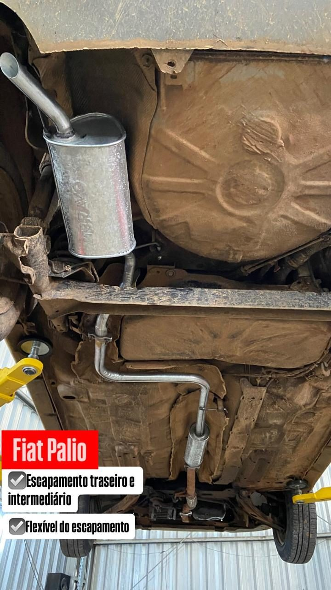

Troca, conserto e fabricação de escapamento — traseiro, intermediário, flexível e catalisador. Solda em aço inox e ponteiras esportivas, feitas na nossa oficina.
Escapamento é um dos serviços mais antigos da Bravo — o próprio nome da oficina nasceu ligado a ele. Atendemos desde o reparo pontual até a fabricação da linha completa:

Troca de escapamento traseiro, intermediário e flexível em Fiat Palio.
Alguns sinais aparecem bem antes de a peça se romper de vez. Se você notar qualquer um deles, vale passar para uma olhada:
Um escapamento furado não é só barulho: ele altera a saída dos gases, pode afetar o funcionamento do motor e, em vazamentos perto da cabine, representa risco real de entrada de monóxido de carbono no interior do carro.
O inox resiste muito mais à corrosão que o aço aluminizado usado na maioria dos escapamentos de fábrica — diferença que pesa bastante no clima úmido daqui. Fazemos solda e fabricação em inox na própria oficina, o que permite ajustar a peça sob medida ao carro em vez de depender só do que existe pronto.
Solda de escapamento em aço inox, feita na Bravo Auto Center.
Para quem quer mudar o visual e o som da saída, trabalhamos com ponteiras em inox — polidas, black e com acabamento queimado. A instalação é feita com solda, não com abraçadeira improvisada, para não sobrar folga nem vibração.

Vale um aviso honesto: muita gente chega aqui certa de que o problema é o escapamento e o ruído vem da suspensão. Como temos a única Ruidcar da região, conseguimos separar as duas coisas com precisão antes de trocar qualquer peça — em vez de trocar por tentativa.
Na maioria dos carros de passeio, a troca do traseiro ou intermediário sai no mesmo dia, normalmente em algumas horas. Serviços com fabricação sob medida ou solda em inox podem levar mais tempo — informamos o prazo junto com o orçamento.
Depende do estado da peça. Furo pontual e emenda solta geralmente resolvem com solda. Quando o tubo ou a caixa já estão comprometidos pela ferrugem, a solda não segura por muito tempo e a troca acaba saindo mais barata. Avaliamos no elevador e mostramos a peça antes de você decidir.
Custa mais na instalação, mas resiste muito mais à corrosão e dura consideravelmente mais — o que compensa especialmente em região úmida. Fazemos tanto o reparo quanto a fabricação em inox.
Não é obrigatório, mas ajuda. Chamando no WhatsApp antes, a gente já sabe o que esperar e você evita fila.